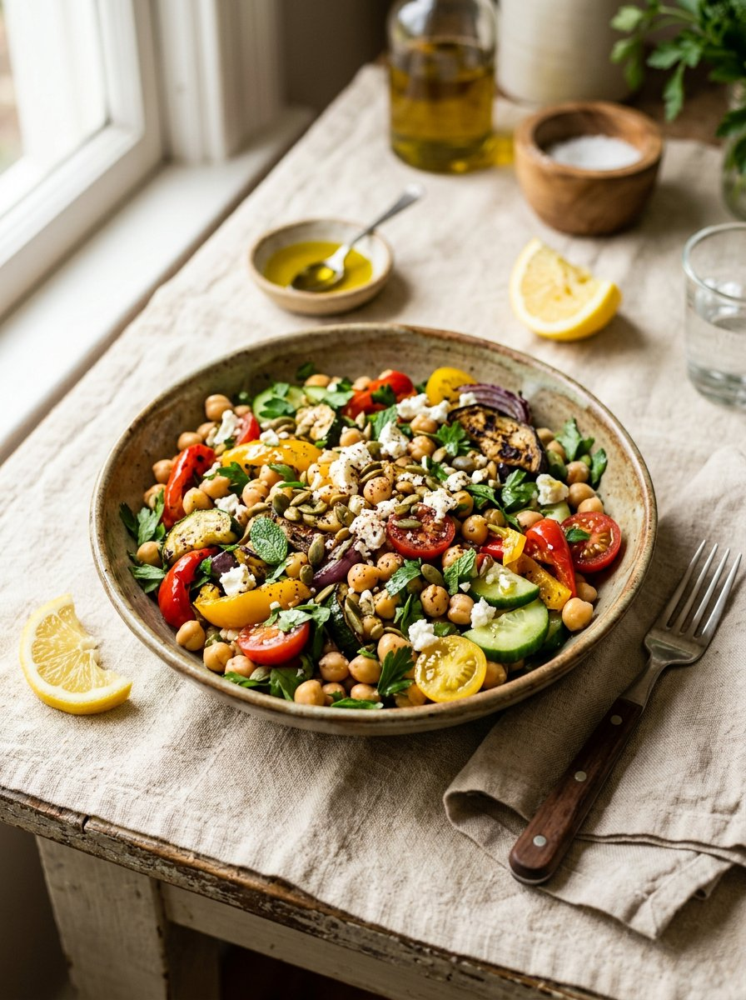

1. Mediterranean Chickpea & Roasted Vegetable Salad
A bright, hearty salad inspired by Mediterranean home cooking. Chickpeas provide protein and fibre; roasted vegetables add sweetness.
Ingredients: 400 g / 14 oz canned chickpeas, drained and rinsed; 1 medium zucchini/courgette, chopped; 1 red pepper, chopped; 1 red onion, sliced; 200 g / 7 oz cherry tomatoes, halved; 30 ml / 2 tbsp olive oil; 15 ml / 1 tbsp lemon juice; 5 ml / 1 tsp dried oregano; 60 g / 2 oz feta-style tofu or omit; 30 g / 1 oz parsley, chopped; salt and black pepper.
Substitutions: White beans for chickpeas (similar time). Omit cheese for vegan. Add cucumber for crunch (no cooking change).
Allergens: Contains soy if using tofu cheese. Naturally gluten-free. Check canned labels.
- Heat oven to 200°C / 400°F. Toss zucchini, pepper and onion with half the oil, salt and oregano on a tray.
- Roast 25 minutes until tender and browned at edges.
- Whisk remaining oil with lemon juice. Combine chickpeas, roasted vegetables, tomatoes, parsley and dressing.
- Season, top with tofu cheese if using, and serve with wholegrain bread.
Storage: Refrigerate 3 days. Dressing softens vegetables over time — add fresh herbs just before serving.